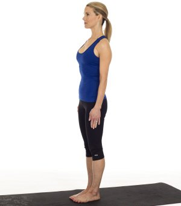

MOUNTAIN POSE
Mountain Pose is the base for all standing poses; it gives you a sense of how to ground in to your feet and feel the earth below you. Mountain pose may seem like "simply standing," but there is a ton going on.
How to do it: Start standing with your feet together. Press down through all ten toes as you spread them open. Engage your quadriceps to lift your kneecaps and lift up through the inner thighs. Draw your abdominals in and up as you lift your chest and press the tops of the shoulders down.
Feel your shoulder blades coming towards each other and open your chest; but keep your palms facing inwards towards the body. Imagine a string drawing the crown of the head up to the ceiling and breathe deeply in to the torso. Hold for 5-8 breaths.
